Cloud cover. Core window 10–11:30 PM decides go/no-go; 1–4 AM is Perseids and the scope. Each point is one forecast run.
chance at least one of the three nights has a usable core window — a better draw than these dates usually give (70%).
Same question at five standards. The headline uses 30% — shootable, though you would lose frames. Ask for a night you would actually drive four hours for and the answer is materially lower.
Per night, at 30%
Counted across 103 ensemble members (ECMWF ENS 51, GEFS 31, GEM ENS 21). Each member is one physically consistent scenario spanning all three nights. You do not need a particular night — you need one of them.
How much do the nights move together? Measured correlation between members is -0.09, so the nights are behaving almost independently and this figure sits right on the independence bound of 78%. That is worth stating because it could be an artefact of the ensemble spreading out at long range — except thirty years of real Augusts here give a correlation of +0.04 and a joint one point off their own independence bound. These dates genuinely are near-independent; three days is long enough for a system to pass. If the nights were locked together the answer would be 51% instead.
That 70% base rate is measured over 30 years of Aug 11-13 at this site. A typical year here is 65% cloud in the core window, and only 34% of individual nights beat 30% — two nights in three are historically unusable. These dates are a gamble every year; the question is only whether this year is a better or worse draw.
Smoke is in the region. Aug 09 forecasts an aerosol depth of 0.72, against 0.3 for a visibly milky sky, and 3 other lead-up nights are also over. Cloud cover reads 0% straight through smoke, so a clear-looking night can still be a low-contrast one.
Median of AIFS, ECMWF, GEM, GFS, ICON, JMA, NWS, UKMO, weighted equally. The number under each night is the middle opinion, not an average — one model going rogue moves the range, not the verdict. HRRR does not forecast this far out yet and will join nearer the date.
Lower is better. Dot & line = consensus of all sources · pale bar = spread across the trusted subset. Bars getting shorter = consensus forming.
Why the bars exclude three sources. GFS, GEM and UKMO are dropped from the bars only — never from the consensus line, the cards or the chart below. GFS forecasts 29 points more cloud than verifies here and pins 100% whenever a single cloud layer saturates; GEM has the worst measured error of the set and UKMO the worst on the larger sample. Between them they held the bars at full height on nearly every reading, which hid whether the sources worth trusting were converging. This makes uncertainty look smaller without making it smaller — the dot chart below still shows every source at full spread, and that is the honest picture. The measurements →
Dots = each source · bar = range · ◇ = consensus median · shaded = under 30%. Blue marks the two lowest-error sources measured here — AIFS and ECMWF. Why →
How often the median landed within 5 points, by how far apart the sources were — 967 night-hours.
Agreement beats lead time. A night the sources agree on is worth reading a week out; a night they span 80 points is not worth reading at all.
| Night | First | Latest | Change | Each step | Range | Model spread |
|---|---|---|---|---|---|---|
| Night 1 | 54% | 32% | ↓ 22 | ↓↓→↓→→↓→→↑↓→→→→↑↓↑↑→↓→→→→→↑↑↑→→↓→→→→→→↓↓→→↓→↓→↓→↑→→→→→↓↑↑→→→↑→↓→↓→→→→→→↑→↓→→→→→↓↑→→→↓→↓→↑↓↑→↑→→→→ | 41 | ±59 → ±98 |
| Night 2 | 56% | 77% | ↑ 21 | →↓→↓→→→→→↑↓→→→→→→→↓→↓→→→→→↑→↓→→↓→↑→→↑→↑→→→↑→↓→→→↓→→→↓→↑↑↓→→→↓→↑→↑→↑↓↓→→↑→↓↑→↓→↓→→→↑→→→↓→→↑↑→↑→↑→→ | 65 | ±54 → ±64 |
| Night 3 | 58% | 66% | ↑ 8 | →→→→→→→→→→→→→→→→→↓↑→→→→→→→↑→→→→↓→↓→→→↓↑→→→→→↑→↑→→→→→↑→→↓↓→↓→→→→→→→→→↑→→↑→→→→↓→↑→↓→↑→→→↑→↓↓→→↑→→→→ | 69 | ±82 → ±96 |
The webcam is pointed at your targets — solved from its own star field to bearing 178.5°, 94° wide. The Milky Way core sits at 15.7° altitude in that frame, Rho Ophiuchi at 20.1°. Same sky, 16.6 km away.
Sat 08 Aug 21:00 — the core region is showing stars. 15 sources above threshold, core at 15.7° through 3.7 air masses.
One bar per capture through the night, height is light collected in the core region. Rho currently reads flux 24,197 — that region contains Antares, so it is the steadiest anchor: it should hold all night under clear sky and collapse the moment cloud crosses it.
Cross-check against the satellite: the two agree on 36 of 60 hours (60%). Both are sampled over the camera, so a mismatch is not the 16.6 km between them. Of the rest: 22 where the satellite called it clear but no stars came through — low cloud or fog, which infrared cannot see; 2 where the satellite saw cloud but stars showed anyway — thin cirrus, and the night may still be workable.
Why this beats a cloud percentage: it is the only reading here that measures the actual target sky rather than the whole dome, and the only one that works on the low cloud infrared struggles with. Calibrated on the night of 4 Aug, the one fully dark night before the trip.
Your whole southern programme lives between azimuth 177° and 232°. the southern slot is blocked
56% cloud upwind — 30–90 km out on the 245° flow, which is roughly what arrives overhead in the next hour.
Left: cloud in the southern slot by distance — near cloud blocks low altitudes, far cloud blocks the cirrus band. Right: cloud by compass octant, south-west highlighted because that is where the core sits.
Left of the marker is what the satellite saw; right of it is HRRR. Watch south-west — that is the core. Cloud arriving there before it arrives overhead is your warning.
What was actually overhead, hour by hour — including after dark, which the camera cannot see. This is what the models get marked against.
Lopstick, First Connecticut Lake — 16.6 km SSW of the site. Hourly frame, cloud estimated, compared against what each model said for that hour.
Live — needs a connection. Frames below are archived.
| Model | Checks | Mean error vs camera |
|---|---|---|
| ECMWF | 144 | 15 pts |
| AIFS | 95 | 18 pts |
| GFS | 144 | 20 pts |
| ICON | 144 | 22 pts |
| JMA | 95 | 23 pts |
| GEM | 144 | 29 pts |
Lowest = believe that one.
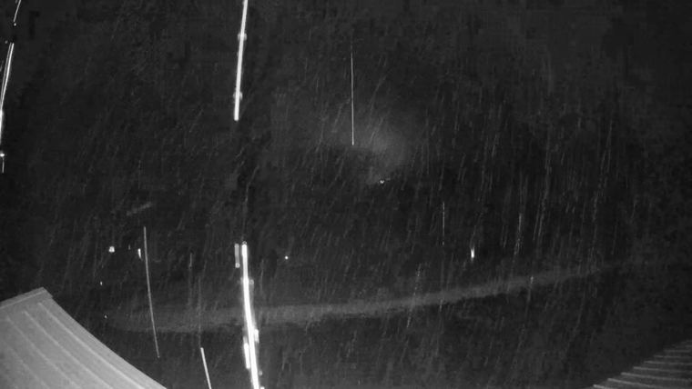
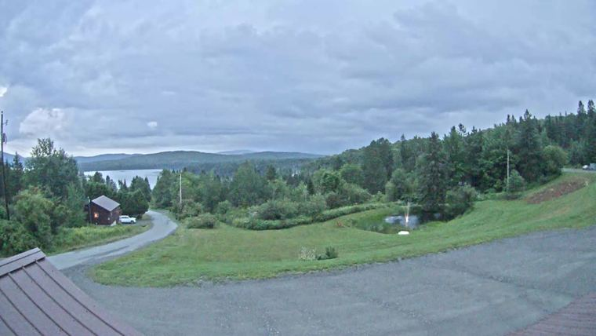
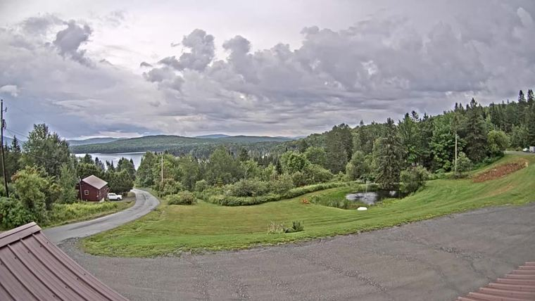
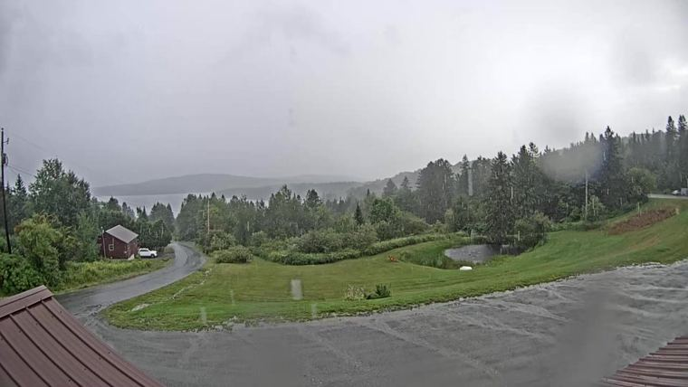
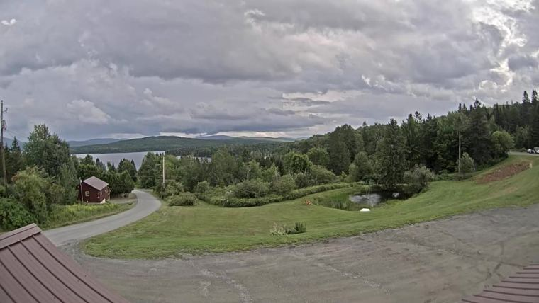
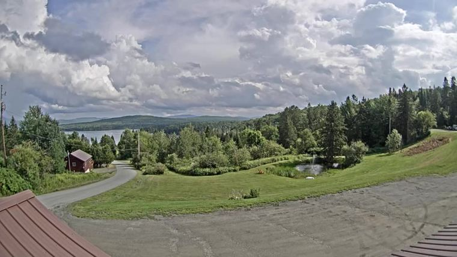
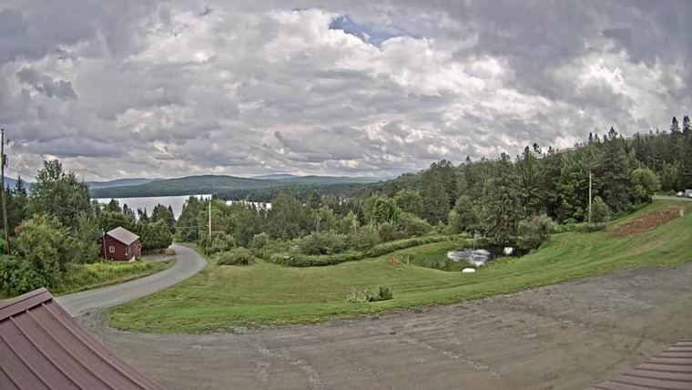
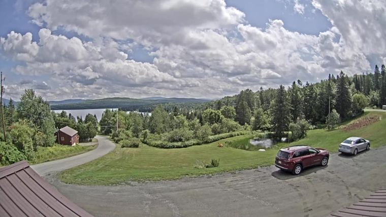
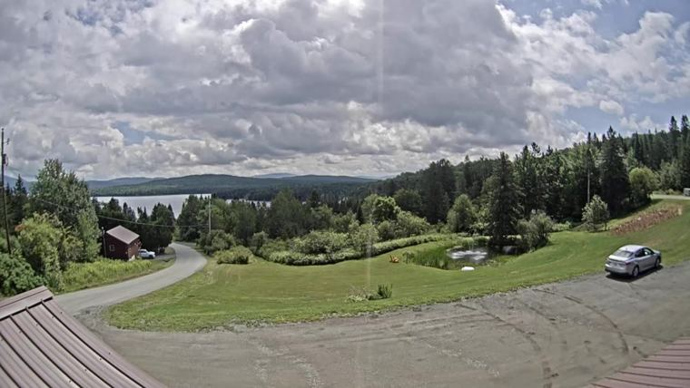
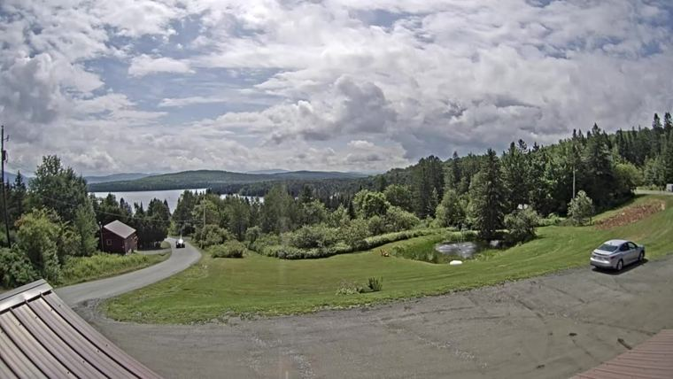
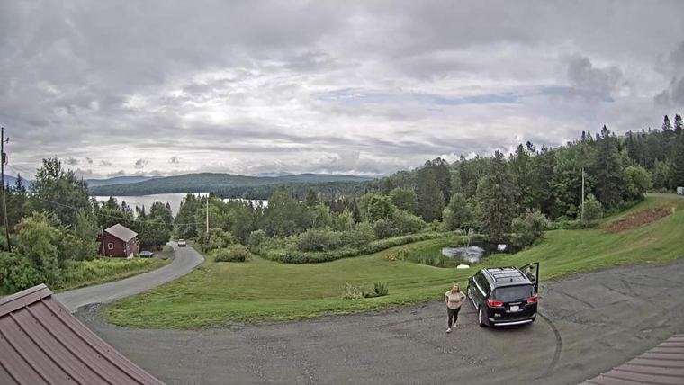
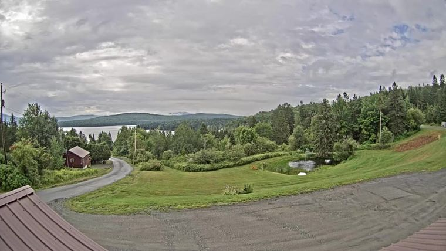
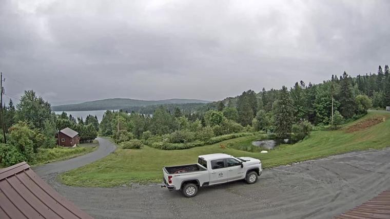
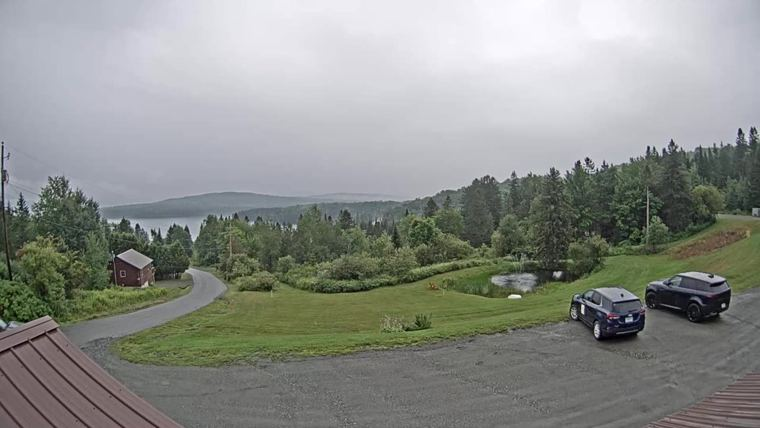
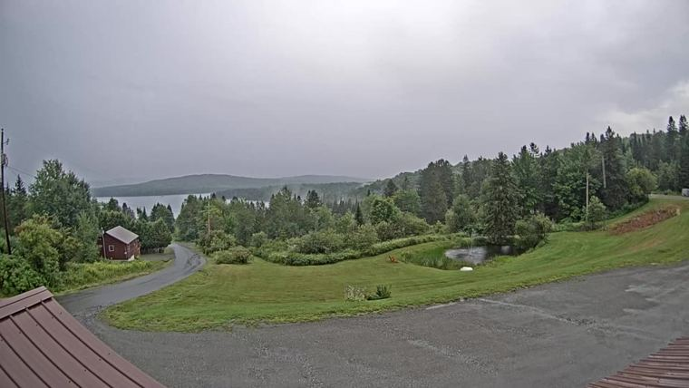
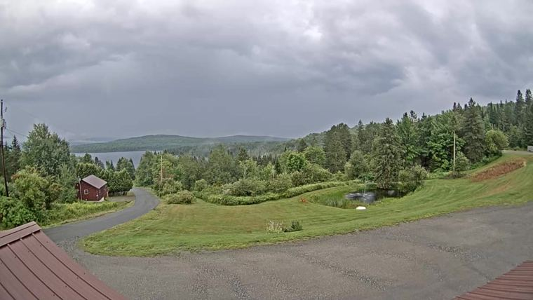
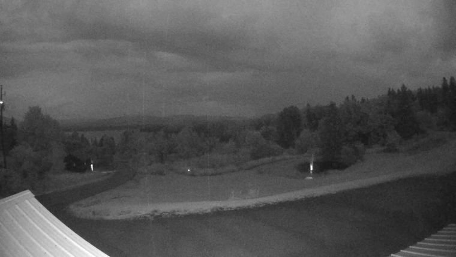
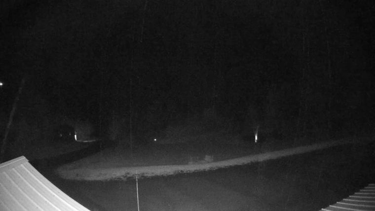
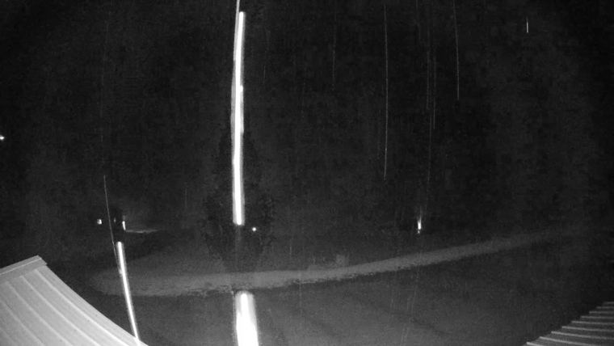
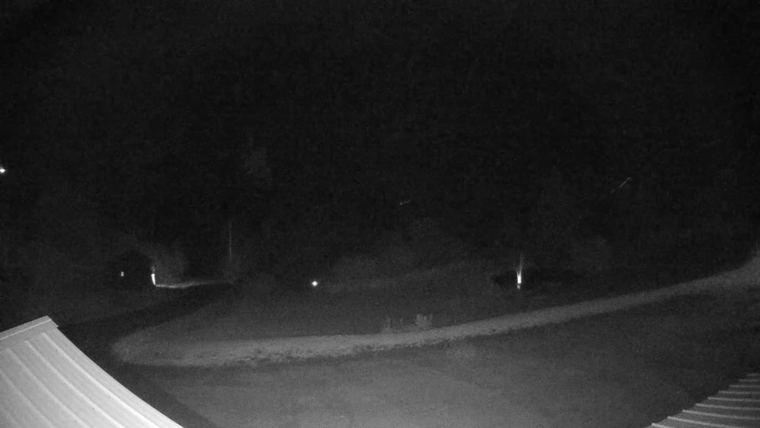
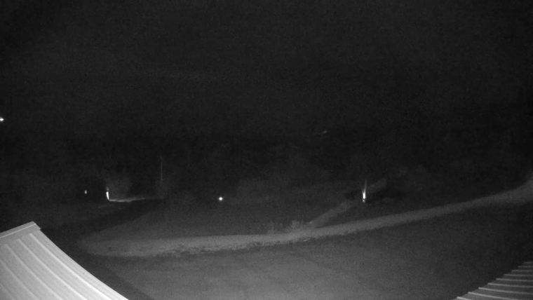
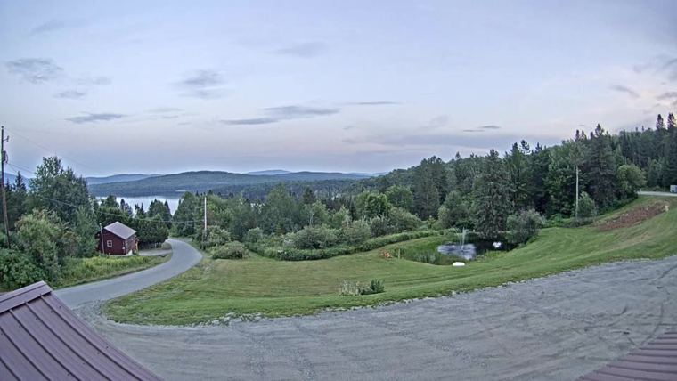
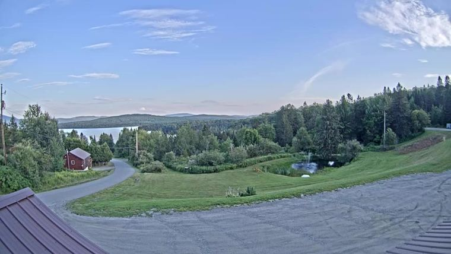
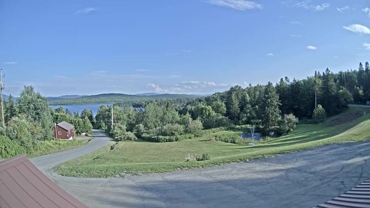
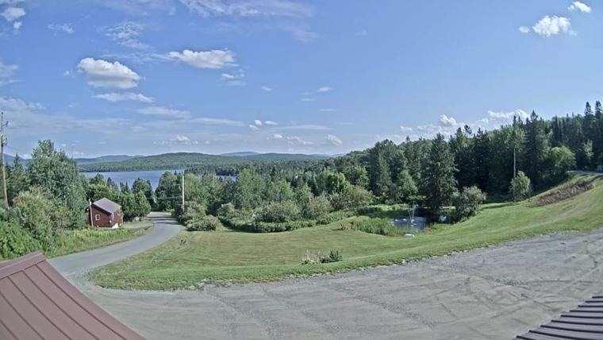
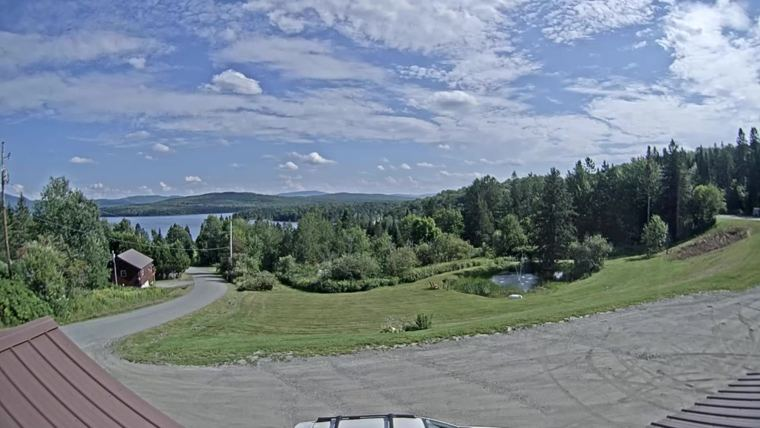
Three readings of the same hour, deliberately uncoloured so they are compared rather than ranked. Models is the range across the four models, Sat is the GOES satellite, and Cam is what the frame itself shows from the red/blue ratio of the sky. Models and Sat are both for the shooting site; Cam sits last because it is the only one that describes the place in the photograph, 16.6 km away. Cam is blank wherever the sun sat too low for it to mean anything — a reddened sky reads as cloud, so those hours show nothing rather than a number we would disbelieve. Where Models sit near zero and Cam does not, that is thin cirrus: the models threshold it away, and it is the one thing that ruins a night the forecast called clear. A * on Sat means no satellite reading existed over the webcam that hour and the value is from the shooting site instead, 16.6 km away.
Darker = more cloud. Rows are sources.
EDT, 6 PM–7 AM. Amber box = core window. Dashed = no data.
Nights before the trip, which verify while you watch — so this measures how far a forecast actually travels in this pattern.
Worst swing so far: 65 points (typical 47) — so a night reading 45% today could land anywhere within ±65 of that.
Against the webcam, the final forecast has missed by 9 points on average, worst 19. Positive means it forecast more cloud than showed up.
| Night | Lead | First | Latest | Swing | Observed | Miss |
|---|---|---|---|---|---|---|
| Wed 05 Aug | 1d → -1d | 16% | 18% | 47 | 31% | -13 |
| Thu 06 Aug | 2d → -1d | 54% | 62% | 65 | 59% | +3 |
| Fri 07 Aug | 3d → -1d | 92% | 84% | 28 | 85% | -1 |
| Sat 08 Aug | 4d → 0d | 66% | 81% | 46 | 100% | -19 |
| Sun 09 Aug | 5d → 1d | 56% | 37% | 52 | — | — |
| Mon 10 Aug | 6d → 2d | 66% | 87% | 44 | — | — |
Observed is the webcam, 16.6 km SSW — a bracket around the night rather than a measurement of it, since cloud can only be scored in daylight. Hover for the frame count.
Percent of sky covered by cloud — not a probability. PoP is a different quantity and doesn't matter here.
| Sky cover | NWS wording | For you |
|---|---|---|
| 0–12% | Clear | Everything works |
| 13–37% | Mostly clear | Shootable — might lose a few frames |
| 38–62% | Partly cloudy | Broken. You'd get gaps — OH_SHIT territory |
| 63–87% | Mostly cloudy | Occasional sucker holes |
| 88–100% | Overcast | Nothing |
Threshold 30% sits inside "mostly clear" (13–37%), deliberately short of its top. Caveat: it's a whole-dome average and can't say where the cloud is.
8 AM to 7 PM — the moose drives, the hiking, and getting the rig onto the porch dry. Hourly, not the daily maximum most forecasts quote.
| day | temp | peak PoP | rain | when | total | cloud |
|---|---|---|---|---|---|---|
| Tue 11 Aug | 15–22°C | 39% | wet for 10 h | 08:00–19:00 | 2.9 mm | 77% |
| Wed 12 Aug | 15–23°C | 17% | drizzle, 4 h | 09:00–19:00 | 0.9 mm | 43% |
| Thu 13 Aug | 11–16°C | 58% | wet for 12 h | 08:00–19:00 | 5.1 mm | 62% |
| Fri 14 Aug | 8–16°C | 35% | wet for 11 h | 09:00–19:00 | 2.5 mm | 68% |
Colour follows hours of rain, not probability — one damp hour out of eight is a good day out.
Mean error against the satellite, by how far ahead the forecast was made. Bars show the 95% interval.
Waiting from seven days out to three gains 13 points of accuracy (95% CI +6 to +19) — a real effect, comfortably clear of the noise.
Past about five days, waiting buys nothing measurable. Three days out to the night itself moves the error by -1 points, but the interval is -9 to +6 — it straddles zero, so the honest statement is that no improvement can be detected at this sample size. The bars show it: one day out scores better than the night itself, which cannot be real and sets the noise floor at roughly ±6 points.
Typical error is far lower than the mean — the median at three days is 8 points. The mean is pulled up by occasional total misses, which is where the risk lives: when the models agree they are usually right, and when they split the tail is announcing itself.
| Model | Error 0–2 d | Error 5–7 d |
|---|---|---|
| ECMWF | 15 | 35 |
| AIFS | 12 | 23 |
| ICON no data past 6 d | 16 | — |
| UKMO no data past 6 d | 20 | — |
| JMA | 24 | 34 |
| GFS | 24 | 31 |
| GEM | 32 | 34 |
Lower is better, measured at this site against satellite observation. The long-range column is blank for models that cannot see all of days 5–7 — averaging only the leads a model happens to reach let a short-range model win a long-range column by being absent from its hardest part. Read this ranking with suspicion. The verification week was overcast on five nights of seven, and the correlation between "forecasts more cloud" and "scores well" is -0.46 — so the table is partly ranking pessimism rather than skill. It will mean more once the sample contains some genuinely clear nights.
How often it landed within 5 points of what happened.
Line = 26%, what you score by always saying "overcast" and knowing nothing. The forecast stops beating it at 5 days.
| half the time | 8 in 10 | |
|---|---|---|
| 1 day out | 42–58% | 14–86% |
| 4 days out | 30–70% | anything |
| 7 days out | 21–79% | anything |
Past about five days it stops being a number: 50% and 75% say the same thing.
| Said, 6–7 days out | Times | Turned out |
|---|---|---|
| 80% or worse | 818 | clear 30% of the time |
| 20% or better | 502 | cloudy 29% of the time |
Symmetric. The night you are pleased about is as unreliable as the one you have written off.
Every number on this page is the median across these. None of them is the answer on its own.
| ECMWF ECMWF · Europe | 9 km | in play |
| HRRR NOAA · US | 3 km | out of range |
| UKMO Met Office · UK | 10 km | in play |
| GEM Environment Canada | 15 km | in play |
| ICON DWD · Germany | 13 km | in play |
| AIFS ECMWF · Europe | 31 km | in play |
| GFS NOAA · US | 13 km | in play |
| JMA Japan Met Agency | 20 km | in play |
| NWS US forecaster-edited blend | 2.5 km grid | in play |
| Now — 7+ days | The spread, not any model |
| 8 Aug — decision day | ECMWF, then UKMO |
| 9–10 Aug | HRRR |
| On site | The webcam and your eyes |
Night-time low cloud and valley fog are the weakest thing every global model does — a clear synoptic pattern can still deliver a fogged-in lake at 3 AM. That is what the webcam is for.
Rebuilt hourly from api.weather.gov, Open-Meteo and the lake webcam.
Each model is a snapshot of a different run — so a little of any apparent disagreement is just run age, not genuine divergence.